5주차 · 1교시
CNN 기초와 학습
이미지를 픽셀 그대로 넣으면 왜 안 되는가
한양대학교 도시공학과 · 11 ConvolutionLayer · 12 이미지구조 · 13 Conv2D · 14 건물외벽학습 · 18 CNN_application
오늘의 질문
이미지를 픽셀 그대로 넣으면
왜 안 되는가?
지금까지 쓴 덴스 레이어는 모든 입력을 모든 뉴런에 이었다. 사진 한 장에 그대로 쓰면 무슨 일이 생기나.
덴스 레이어는 전부 잇는다
Fully Connected
입력 하나가 다음 층의 모든 노드에 연결된다. 지난주 생활인구 모델은 이 층을 몇 겹 쌓아 파라미터 1,185개였다.
사진 한 장이 입력 100만 개
500 × 500 × 4
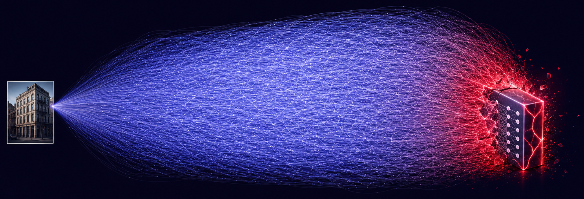
사진 한 장이 셀 수 없는 연결선으로 부풀어 덴스 레이어를 덮치는 그림
앉은 자리에서 사진 하나 넣었을 뿐인데 이렇게 된다. 덴스 레이어로는 시작조차 못 한다.
가까운 것끼리만 잇는다
Conv1D · filters=1 · kernel_size=2
연결은 네 번인데 가중치는 세 개뿐이다. 같은 가중치가 옆으로 밀려 가며 재사용된다.
덴스와 무엇이 다른가
장점은 둘이다

전부와 이어진 엉킨 그물과, 옆자리끼리만 이어진 깔끔한 사슬
가중치가 적다
같은 입력에 덴스는 30개, 합성곱은 3개. 열 배 차이고, 그만큼 빠르다.
인접성을 구조로 못 박는다
“멀리 있는 애들하고 사귀지 마.” 입력 순서가 결과에 영향을 준다.
그럼 어떤 데이터에 맞을까 — 옆자리가 의미 있는 데이터다.
시계열(어제와 오늘), 그리고 이미지(옆 픽셀). 9주차 시계열에서 같은 이야기가 다시 나온다.
필터 하나 = 관계 하나
필터를 늘리면 다른 관계를 같이 실어 보낸다

입력 5개에 Conv1D 필터를 1개·3개·5개로 늘렸을 때 만들어지는 노드
필터 1개 — 관계를 설명하는 방식이 하나뿐이다
필터 3개 — 같은 자리에 세 줄이 동시에 생긴다
필터 5개 — 5 × 5 = 25칸, 이걸 펴서 덴스로 보낸다
“오른 것”과 “내린 것”을 동시에 전달하고 싶으면 필터가 둘 이상이어야 한다.
손잡이 세 개
kernel_size · padding · strides
정답을 고민하지 말 것 — 경사하강이 뭉개 버린다. 대신 에러를 잡을 때 이 구조를 알면 “이 관계를 아예 안 보고 있구나”가 보인다.
쌓으면 차원이 늘어난다
그래서 마지막에 Flatten 이 필요하다
우리가 원하는 답은 숫자 하나다. 그래서 끝에서 한 줄로 펴고 덴스를 붙인다.
한계를 먼저 본다
가볍지만 성능을 보장하지는 않는다
이 데이터는 필드 순서에 의미가 없다. 대지 비율 옆에 도로 비율이 있는 게 아무 뜻도 아니다.
그럼 옆자리가 정말 의미 있는 데이터는 무엇인가 — 이미지다.
2부 · 이미지 데이터
입력만 바뀐다.
출력은 그대로다

숫자 줄과 건물 사진이 같은 관으로 들어가 같은 출력 하나로 나오는 그림
지금까지 입력은 독립변수였다. 지금부터 그 자리에 사진이 들어간다. 맞혀야 할 답은 달라지지 않는다.
뉴럴 네트워크가 다룰 수 있는 데이터에는 한계가 없다. 우리가 취급할 것을 숫자로 환원할 수만 있으면 된다.
관점을 바꾸는 한 장
이미지도
데이터다
RGB 세 색이 얼마나 진한지만 들고 있다. 그 진하기를 0~255 숫자로 적는다.
500 × 500 이면 빨강 25만 개, 초록 25만 개, 파랑 25만 개. 투명도까지 네 층이다.
파이썬 이미지 라이브러리로 열면 그냥 넘파이 배열로 들어온다.
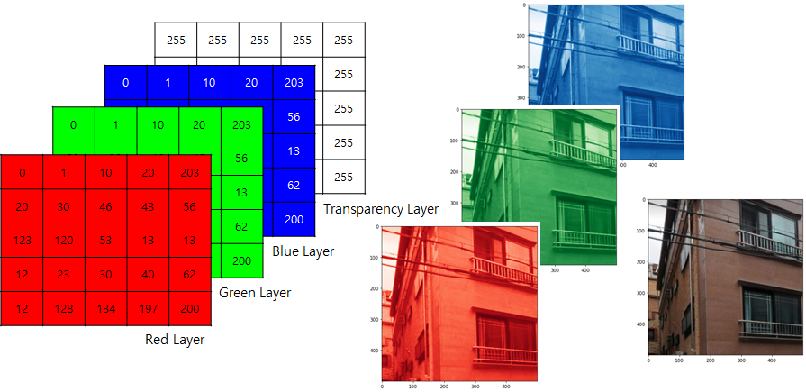
Red · Green · Blue · Transparency 네 개의 숫자 층
숫자를 바꾸면 그림이 바뀐다
12 이미지구조.ipynb
초록 채널만

초록 채널만 꺼내 출력
빨강을 255로
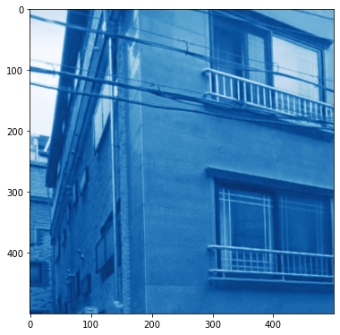
빨강 채널 앞 200줄을 255로 채운 결과
빨강 ↔ 파랑

빨강 채널과 파랑 채널을 맞바꾼 결과
세 장 모두 같은 사진이다. 배열 안의 숫자만 건드렸다.
회색조
세 층을 한 층으로

빨강·초록·파랑 세 장이 회색 한 장으로 합쳐지는 그림
회색 = 0.2989 R + 0.5870 G + 0.1140 B
계수 셋을 더하면 1이 된다. 초록이 가장 큰 이유는 사람 눈이 초록에 제일 민감해서다.
이것도 차원 축소다 — 네 층을 한 층으로. 뒤에 나올 MNIST 가 바로 한 층짜리다.
반대로도 된다
숫자를 적어
그림을 만든다
배열에 값을 직접 써 넣고 합쳐서 출력하면 적은 그대로 나온다.
실습에서 이 값을 직접 바꿔 볼 것. 숫자와 그림이 서로 치환된다는 감각이 오늘 2부의 목표다.
커널 3은 9칸이 아니다
Conv2D · 채널까지 통째로 퍼 간다
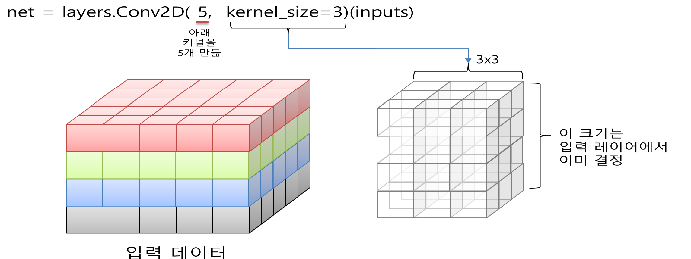
RGBT 네 층으로 쌓인 입력 데이터와, 그 깊이만큼 두꺼운 3×3 커널
커널의 깊이는 고르는 게 아니다 — 입력 채널 수에서 이미 정해진다.
채널이 넷이면 9 × 4 = 36개 값이 한 번에 모인다. 절편을 더해 37개.
답을 미리 알고 돌려 본다
set_weights 로 가중치를 박아 넣는다
실제로 돌리면 540 · 360 · 180 이 그대로 나온다. 값이 어떻게 흐르는지 머릿속에 있어야 중간에서 자르고 붙일 수 있다.
왜 이런 발상이 나왔나
필터는 원래
사람이 정했다
포토샵의 그 필터다. 전부 3 × 3 숫자판 하나다.
CNN 이 한 일은 그 숫자를 학습으로 찾게 한 것이다.
“어떤 필터를 쓰면 더 좋은 정보가 나오는지 네가 찾아봐.”
실습에서 가우시안 블러 · 샤프닝 · 엠보싱 · 엣지를 직접 씌워 볼 것.
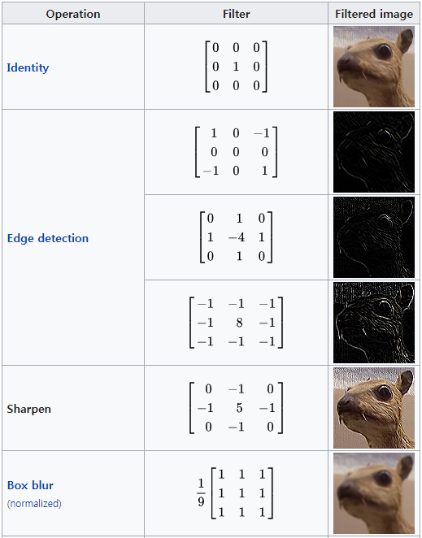
Identity · Edge detection · Sharpen · Box blur 필터와 그 결과
Pooling
뭉갤 때
무엇을 남길까
Max — 제일 큰 값. 필터가 찾아낸 경계가 살아남는다.
Average — 평균. 고르게 가져가지만 경계가 흐려진다.
그리고 풀링을 지나면 크기가 확 줄어든다 — 차원을 계단식으로 내리는 장치다.
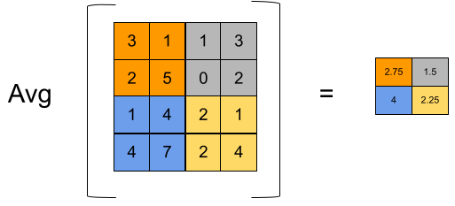
4칸을 하나로 줄이는 풀링 도해
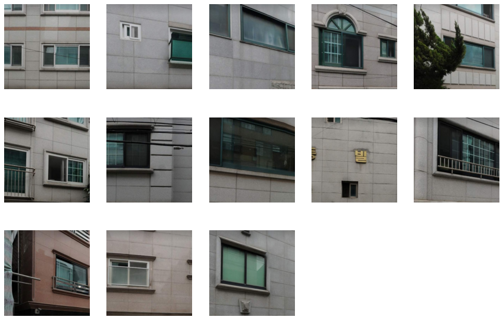
송파 빌라 외벽 로드뷰 크롭 이미지 모음
4부 · 도시 데이터
외벽이 벽돌인가
대리석인가
송파 빌라 주소를 뽑아 로드뷰로 바라보고 같은 크기로 자른 138장.
건물 외벽 재료는 어떤 공적 데이터에도 없다.
그래서 우리가 만든다 — 이것이 도시 분야에서 이미지가 갖는 값어치다.
Colab 에서 열기 · 14 건물외벽학습.ipynb →
제일 힘든 일
라벨링
필드는 셋뿐이다 — 파일명, 타입, 값. 벽돌 0 · 대리석 1.
138장을 하나하나 열어서 한땀한땀 집어넣었다. 모델 만드는 시간보다 이게 훨씬 오래 걸린다.
학습 100장
검증 38장

파일명 · 타입 · 값 세 필드로 된 라벨 테이블
학습 전에
왜 255로
나누나
활성화 함수는 입력이 0 근처일 때만 기울기가 살아 있다.
숫자가 크면 기울기가 사라져 학습이 한없이 느려진다. 그래서 0~1 사이로 눌러 놓는다.
정규화 레이어를 써도 된다 — 여기서는 그냥 255로 나눴다.
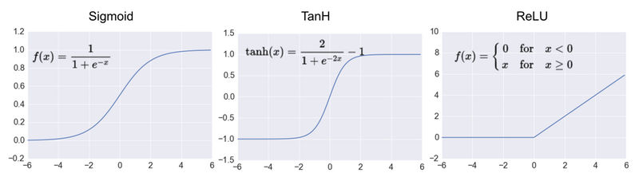
Sigmoid · TanH · ReLU 의 모양 — 양끝이 평평하다
크기는 줄고, 피처는 늘어난다
앞으로 논문에서 끝없이 보게 될 그림
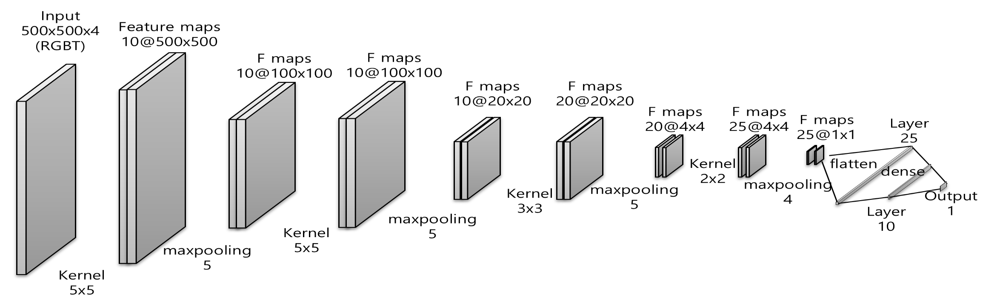
500×500×4 입력에서 25@1×1 까지 줄어드는 외벽 학습 ConvNet 도식
합성곱 레이어에는 활성화가 없다 — 그래서 뒤에 LeakyReLU 를 따로 붙인다.
사진을 넣었는데 가중치가 7,636개
지난주 표 데이터 모델은 7만 개가 넘었다
필터를 잔뜩 넣은 것 같은데도 열 배 가볍다. 그러면서 인접성을 살린다 — 이미지에는 특효약이다.
100 epoch
정확도 91%
예측값은 딱 1이 되지 않는다. 0.999 · 0.004 처럼 가까이 갈 뿐이다.
이미지 학습은 GPU 와 CPU 차이를 피부로 느낄 수 있다. 런타임을 바꿔 한 번 돌려 볼 것.
한계
흰 벽돌을
못 맞혔다
모델이 결을 본 것인지 색을 본 것인지 우리는 알 수 없다.
100장으로 학습했으니 이런 착각이 생긴다. 더 많은 패턴, 데이터 증강, 샘플링, 더 센 일반화 — 6·7주차가 그 이야기다.
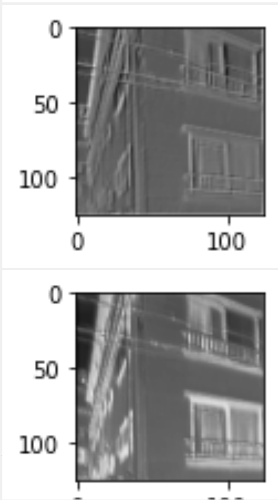
검증에서 틀린 외벽 이미지
필터마다 다른 것을 본다
층마다 중간 출력을 꺼내 본 것
같은 사진인데 필터마다 잡아낸 것이 다르다. 풀링을 지나면 뭉개지지만 성격은 그대로 따라간다.
사진 한 장이 숫자 25개
모델 15번 레이어에서 잘라낸 값

ConvNet 전체 도식에서 flatten 구간만 밝게 강조한 그림
CNN 은 분류기이기 전에 요약기다. 이 이야기가 9주차 컨텍스트 벡터에서 그대로 다시 나온다.
5부 · 격자 데이터
한 칸에 네 가지가 쌓인다

지도 위에 씌운 100m 격자와 그 위로 쌓인 네 장의 데이터 층
주택 수
거주인구 수
직장인구 수
거주자 추정소득
격자를 쓰는 이유는 간격이 균질하기 때문이다. 단점은 그 균질한 데이터를 만들기가 아주 어렵다는 것.
격자 한 칸이 픽셀 한 칸이다
100m × 100m
다른 것은 칸에 든 숫자의 뜻뿐이다. 층 수도 넷일 필요가 없다 — 열 층도 스무 층도 된다.
배후지를 보고 가운데 매장의 매출을 맞힌다
서울 355개 매장 · 1.1km × 1.1km · 2023.12
X 의 모양은 355 × 11 × 11 × 4. 지난주 외벽이 138 × 500 × 500 × 4 였던 것과 똑같이 읽으면 된다.
층마다 단위가 다르다
이미지는 전부 0~255 였다
맨 앞에 BatchNormalization 을 한 장 넣어 층을 맞춘다.
목표값 매출액에는 MinMax 스케일러를 미리 건다.
맞히려는 게 금액이므로 마지막 활성화는 linear, 손실은 MSE, 지표는 MAE.
읽는 법이 외벽 모델과 똑같다
11×11×4 → 피처 10개 → 매출액
이 자리에 들어갈 수 있는 건 브랜드 매출만이 아니다 — 아파트 시세도, 유동인구도 된다.
조건은 하나 — 공간의 정보를 최대한 담아 줄 것. 합성곱은 이미지 전용 도구가 아니다.
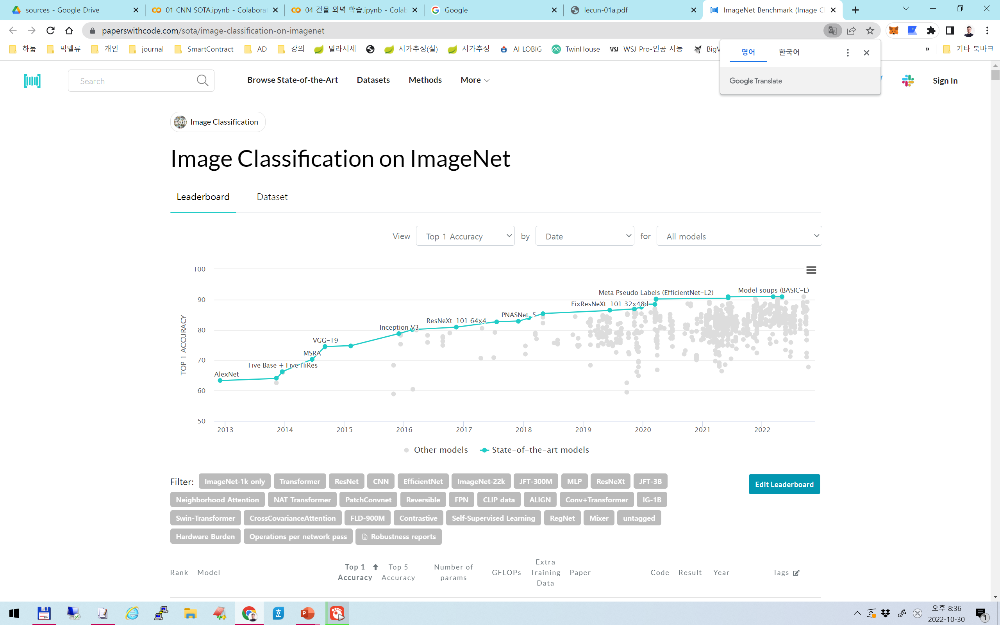
paperswithcode 의 ImageNet 분류 리더보드
크게 만든다고 올라가지 않는다 — 가중치는 적게, 성능은 높게, 속도는 빠르게.
paperswithcode.com — 리더보드와 논문 링크가 같이 있다. 이론적 배경 잡을 때 쓸 것.
LeNet — 1998
MNIST 필기체 · 테스트 98.8%
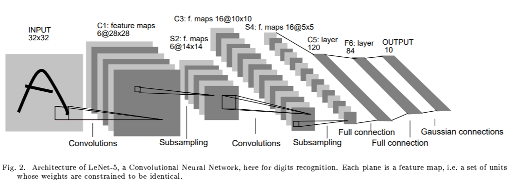
LeNet-5 구조 — 32×32 에서 120 피처 벡터까지
우리가 방금 배운 방식으로 그대로 읽힌다 — 합성곱, 서브샘플링, 합성곱, 서브샘플링, 플래튼, 덴스.
라벨을 0~9 숫자 그대로 주면 안 된다. 0과 1의 간격이 1과 2의 간격과 같다고 가정해 버린다 — 원핫으로 바꿔 간격을 없앤다.
AlexNet — 2012
가중치 5천만 개 · 출력 1000개
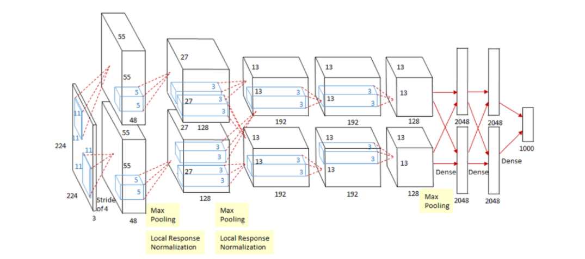
AlexNet 구조 — 227×227×3 에서 출력 1000까지
출력이 1000개인 이유 — ImageNet 의 카테고리가 1000개다.
필터를 늘리면 담을 수 있는 관계가 늘지만 학습이 느려진다. 어디까지 늘릴지는 감이다.

Standard Neural Net 과 After applying dropout 비교
AlexNet 이 가져온 것
일부러
꺼 버린다
학습할 때마다 노드 일부를 무작위로 끈다. 한 경로에만 의존하지 못하게 만든다.
우리 모델은 합성곱 구간에는 걸지 않았다. 피처 뽑는 데는 모두 참여하고, 판단하는 덴스 구간에만 걸었다.
그 뒤의 계보
VGG · ResNet · DenseNet · EfficientNet
계보 전체가 같은 질문 하나에 답해 왔다 — 어떻게 하면 더 적은 가중치로 더 좋은 피처를 뽑을까.
실무
다시 만들지
않는다
케라스가 학습된 가중치까지 같이 준다. 한 줄이면 불러온다.
고를 때 정확도만 보지 말 것. 파라미터 수와 추론 시간을 같이 본다 — 연구실 GPU 냐 현장 기기냐에 따라 답이 다르다.

케라스가 제공하는 학습 모델 목록 — 용량·정확도·파라미터·깊이·추론 시간
3분 · 옆 사람과
하나만 골라 이야기해 보자
Q1 우리 모델이 외벽의 결을 본 것인지 색을 본 것인지, 어떻게 확인하겠는가?
Q2 로드뷰 이미지에서 외벽 재료 말고 또 무엇을 라벨링할 수 있겠는가? 그게 어떤 도시 문제에 쓰이겠는가?
Q3 25개 피처 벡터로 클러스터링을 했을 때, 묶인 그룹에 이름을 붙이려면 무엇을 더 봐야 하는가?
오늘의 질문에 답한다
픽셀 그대로 넣으면
너무 많고, 너무 모른다
너무 많다
사진 한 장이 입력 100만 개. 덴스로 받으면 가중치가 억 단위로 터진다.
너무 모른다
덴스는 두 픽셀이 옆에 붙어 있다는 사실을 구조적으로 모른다.
합성곱은 가중치를 재사용해 가볍게 만들고 인접성을 구조로 못 박는다.
그 결과로 얻는 것이 피처 벡터다 — 사진 한 장을 숫자 몇 개로 요약한다.
그리고 5부에서 본 것 — 이미지가 아니어도 된다. 옆자리가 의미 있으면 격자 데이터에도 그대로 쓴다.
다음 주 — ‘무엇이 있다’ 까지 왔다. 이제 ‘어디에 있다’ 로 간다. 예습: 19 YOLO.ipynb · 20 Unet.ipynb